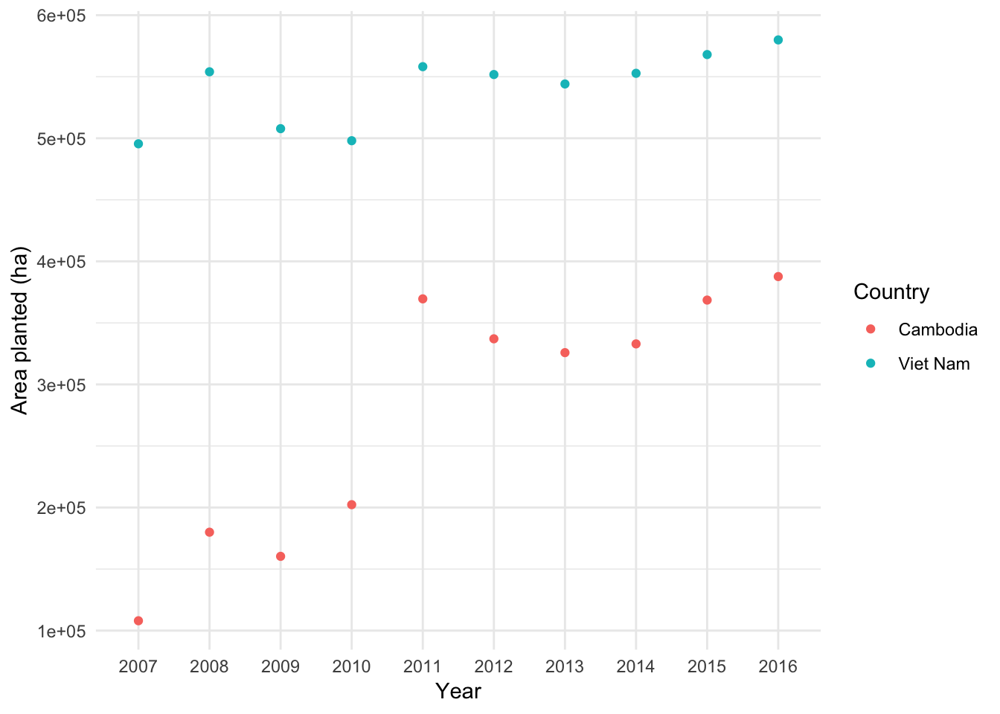

Data import and Tidy-ing
Kelsey Andersen
Adapted from R for Data Science by Hadley Wichkam and Garrett Grolemund
library(tidyverse)Getting data into R!
Maybe the most important step?
Base R
- read.csv() is the function avaiable from base R, and maybe the one you are most familiar with
- This function reads data directly into a data frame so to use other packages (like dplyr) you will need to convert to a tibble yourself
- You can specify if first columns of data are headers using header = TRUE
FAO1 <- read.csv("FAOSTAT_data.csv", header = TRUE)
readr
- read_csv() (from readr package) makes data from a .csv file right into a tibble
- up to 10x faster than read.csv()
- reads in data directly as a tibble
- tibbles play better with your console window (pays attention to how wide your console window is) and is implemented through the dplyr package
library(tidyverse)
FAO1 <- read_csv("FAOSTAT_data.csv")## Parsed with column specification:
## cols(
## Country = col_character(),
## Element = col_character(),
## Item = col_character(),
## Year = col_integer(),
## Unit = col_character(),
## Value = col_integer()
## )FAO1## # A tibble: 40 x 6
## Country Element Item Year Unit Value
## <chr> <chr> <chr> <int> <chr> <int>
## 1 Cambodia Area harvested Bananas 2007 ha 30000
## 2 Cambodia Area harvested Bananas 2008 ha 32000
## 3 Cambodia Area harvested Bananas 2009 ha 33000
## 4 Cambodia Area harvested Bananas 2010 ha 35002
## 5 Cambodia Area harvested Bananas 2011 ha 32574
## 6 Cambodia Area harvested Bananas 2012 ha 31844
## 7 Cambodia Area harvested Bananas 2013 ha 31757
## 8 Cambodia Area harvested Bananas 2014 ha 31741
## 9 Cambodia Area harvested Bananas 2015 ha 31786
## 10 Cambodia Area harvested Bananas 2016 ha 31875
## # ... with 30 more rowsSome tips for read_csv()
- Use skip = n to skip n nows if there are rows of metadata above your column headers.
- Use col_names = FALSE if there are no row headings or
- col_names = c(“x”, “y”, “z”) to pass a vector of column names to the data table
- use na = “.” to specify what missing values look like
Say that after import, you notice that you would like to change one of your variable types, you can do that by specifying the variable type for each column. For example, let’s say we want to change year to character:
FAO2 <- read_csv("FAOSTAT_data.csv", col_types = cols(
Country = col_character(),
Element = col_character(),
Item = col_character(),
Year = col_character(), ### changed year to character
Unit = col_character(),
Value = col_integer()
))
FAO2## # A tibble: 40 x 6
## Country Element Item Year Unit Value
## <chr> <chr> <chr> <chr> <chr> <int>
## 1 Cambodia Area harvested Bananas 2007 ha 30000
## 2 Cambodia Area harvested Bananas 2008 ha 32000
## 3 Cambodia Area harvested Bananas 2009 ha 33000
## 4 Cambodia Area harvested Bananas 2010 ha 35002
## 5 Cambodia Area harvested Bananas 2011 ha 32574
## 6 Cambodia Area harvested Bananas 2012 ha 31844
## 7 Cambodia Area harvested Bananas 2013 ha 31757
## 8 Cambodia Area harvested Bananas 2014 ha 31741
## 9 Cambodia Area harvested Bananas 2015 ha 31786
## 10 Cambodia Area harvested Bananas 2016 ha 31875
## # ... with 30 more rowsRead directly from excel files using the tidyverse package readxl
- read_excel() detects file path - read_xlsx() reads directly from .xlsx file
FAOxls <- readxl::read_excel("FAOSTAT_data2.xlsx")
FAOxls## # A tibble: 40 x 6
## Country Element Item Year Unit Value
## <chr> <chr> <chr> <dbl> <chr> <dbl>
## 1 Cambodia Area harvested Bananas 2007. ha 30000.
## 2 Cambodia Area harvested Bananas 2008. ha 32000.
## 3 Cambodia Area harvested Bananas 2009. ha 33000.
## 4 Cambodia Area harvested Bananas 2010. ha 35002.
## 5 Cambodia Area harvested Bananas 2011. ha 32574.
## 6 Cambodia Area harvested Bananas 2012. ha 31844.
## 7 Cambodia Area harvested Bananas 2013. ha 31757.
## 8 Cambodia Area harvested Bananas 2014. ha 31741.
## 9 Cambodia Area harvested Bananas 2015. ha 31786.
## 10 Cambodia Area harvested Bananas 2016. ha 31875.
## # ... with 30 more rowsRead in other data types
- Read in SPSS, Stata and SAS files using package haven
What is “tidy” data?
Let’s take a look at three data sets (more info at this Rstudio webinar!)
#devtools::install_github("rstudio/EDAWR")
library(EDAWR)##
## Attaching package: 'EDAWR'## The following objects are masked _by_ '.GlobalEnv':
##
## a, b, y## The following object is masked from 'package:dplyr':
##
## storms## The following objects are masked from 'package:tidyr':
##
## population, whostormsA <- EDAWR::storms ## so it doesn't get confused with built-in NOAA weather data!
Let’s examine three built-in datasets:
First, ‘cases’:
cases## country 2011 2012 2013
## 1 FR 7000 6900 7000
## 2 DE 5800 6000 6200
## 3 US 15000 14000 13000Notice that each variable stored in its own cell:
- Country is in a column
- Year is in a row
Next, ‘polution’:
pollution## city size amount
## 1 New York large 23
## 2 New York small 14
## 3 London large 22
## 4 London small 16
## 5 Beijing large 121
## 6 Beijing small 56In ‘pollution’, variables “amount of small particles” and “amount of large particles” are not in their own column. Therefore, doing math with them would be difficult!
Finally, ‘stormsA’:
stormsA## # tibble [6 × 4]
## storm wind pressure date
## <chr> <int> <int> <date>
## 1 Alberto 110 1007 2000-08-03
## 2 Alex 45 1009 1998-07-27
## 3 Allison 65 1005 1995-06-03
## 4 Ana 40 1013 1997-06-30
## 5 Arlene 50 1010 1999-06-11
## 6 Arthur 45 1010 1996-06-17This format, where each variable is in it’s own column, is much easier to work with!
- What if we want to make a ratio of pressure to wind?
stormsB <- (stormsA$pressure / stormsA$wind)
stormsB## [1] 9.154545 22.422222 15.461538 25.325000 20.200000 22.444444
Tidyr
- Tidy data has each variable saved in it’s own column &
- Each observation has a row &
- Each value in it’s own cell!
- this package is similar to Reshape2 (cast and melt)
- Best practice to organize your data this way now, and avoid the pain of data cleaning later!
In the book (R for Data Science) there are three data table examples. Which one is “tidy”?
table1## # A tibble: 6 x 4
## country year cases population
## <chr> <int> <int> <int>
## 1 Afghanistan 1999 745 19987071
## 2 Afghanistan 2000 2666 20595360
## 3 Brazil 1999 37737 172006362
## 4 Brazil 2000 80488 174504898
## 5 China 1999 212258 1272915272
## 6 China 2000 213766 1280428583table2## # A tibble: 12 x 4
## country year type count
## <chr> <int> <chr> <int>
## 1 Afghanistan 1999 cases 745
## 2 Afghanistan 1999 population 19987071
## 3 Afghanistan 2000 cases 2666
## 4 Afghanistan 2000 population 20595360
## 5 Brazil 1999 cases 37737
## 6 Brazil 1999 population 172006362
## 7 Brazil 2000 cases 80488
## 8 Brazil 2000 population 174504898
## 9 China 1999 cases 212258
## 10 China 1999 population 1272915272
## 11 China 2000 cases 213766
## 12 China 2000 population 1280428583table3## # A tibble: 6 x 3
## country year rate
## * <chr> <int> <chr>
## 1 Afghanistan 1999 745/19987071
## 2 Afghanistan 2000 2666/20595360
## 3 Brazil 1999 37737/172006362
## 4 Brazil 2000 80488/174504898
## 5 China 1999 212258/1272915272
## 6 China 2000 213766/1280428583Only table 1!
Notice that each column is a variable.
table1## # A tibble: 6 x 4
## country year cases population
## <chr> <int> <int> <int>
## 1 Afghanistan 1999 745 19987071
## 2 Afghanistan 2000 2666 20595360
## 3 Brazil 1999 37737 172006362
## 4 Brazil 2000 80488 174504898
## 5 China 1999 212258 1272915272
## 6 China 2000 213766 1280428583Graph your tidy data
Using the data in Table 1, you can easily graph!
library(ggplot2)
ggplot(table1, aes(year, cases)) +
geom_line(aes(group = country), color = "gray30") +
geom_point(aes(color = country)) +
theme_minimal()
Or, using our tidy FAO data, we can see how much area of Cassava changed over time in each country
FAO3 <- FAO2 %>% filter(Item == "Cassava")
library(ggplot2)
ggplot(FAO3, aes(Year, Value)) +
geom_point(aes(color = Country)) +
ylab("Area planted (ha)") +
theme_minimal()
Getting un-tidy data into shape
Let’s look at the “cases” dataset from earlier
Spreading and Gathering
Gathering
Let’s ‘gather’ the ‘cases’ dataset!
- Function = gather()
- Key column
- Value column
- Names of columns to collapse
- Key column
cases## country 2011 2012 2013
## 1 FR 7000 6900 7000
## 2 DE 5800 6000 6200
## 3 US 15000 14000 13000cases2 <- gather(cases, key = "year", value = "n", 2:4)
cases2## country year n
## 1 FR 2011 7000
## 2 DE 2011 5800
## 3 US 2011 15000
## 4 FR 2012 6900
## 5 DE 2012 6000
## 6 US 2012 14000
## 7 FR 2013 7000
## 8 DE 2013 6200
## 9 US 2013 13000cases3 <- cases %>% gather(key = "year", value = "n", "2011", "2012", "2013")Spreading
Let’s ‘spread’ the pollution dataset
pollution## city size amount
## 1 New York large 23
## 2 New York small 14
## 3 London large 22
## 4 London small 16
## 5 Beijing large 121
## 6 Beijing small 56pollution2 <- spread(pollution, size, amount)
pollution2## city large small
## 1 Beijing 121 56
## 2 London 22 16
## 3 New York 23 14
Recap (adapted from G. Gromland)

Separating and uniting
separate() splits a column by a character string seperator
- Let’s look at the storms data!
- Year, month and day are “hidden” variables
stormsA## # tibble [6 × 4]
## storm wind pressure date
## <chr> <int> <int> <date>
## 1 Alberto 110 1007 2000-08-03
## 2 Alex 45 1009 1998-07-27
## 3 Allison 65 1005 1995-06-03
## 4 Ana 40 1013 1997-06-30
## 5 Arlene 50 1010 1999-06-11
## 6 Arthur 45 1010 1996-06-17stormsC <- separate(stormsA, date, into = c("year", "month", "day"), sep = "-")
stormsC## # tibble [6 × 6]
## storm wind pressure year month day
## <chr> <int> <int> <chr> <chr> <chr>
## 1 Alberto 110 1007 2000 08 03
## 2 Alex 45 1009 1998 07 27
## 3 Allison 65 1005 1995 06 03
## 4 Ana 40 1013 1997 06 30
## 5 Arlene 50 1010 1999 06 11
## 6 Arthur 45 1010 1996 06 17Unite() does the inverse of seperate!
- Unites columns into a single variable
stormsD <- stormsC %>% unite("date", year, month, day, sep = "-")
stormsD## # A tibble: 6 x 4
## storm wind pressure date
## <chr> <int> <int> <chr>
## 1 Alberto 110 1007 2000-08-03
## 2 Alex 45 1009 1998-07-27
## 3 Allison 65 1005 1995-06-03
## 4 Ana 40 1013 1997-06-30
## 5 Arlene 50 1010 1999-06-11
## 6 Arthur 45 1010 1996-06-17